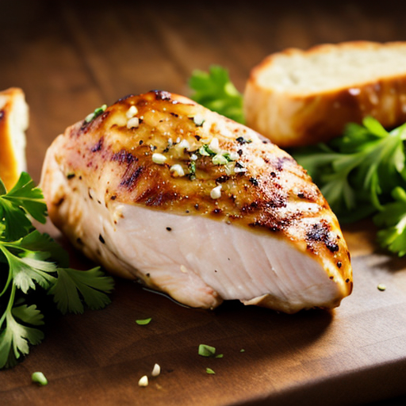

Chicken Breast Recipe

This recipe features juicy pan-seared chicken breast with a bright and flavorful lemon-herb butter sauce. It's quick, easy, and perfect for a weeknight meal.
Ingredients
- 2 boneless, skinless chicken breasts
- 1 tablespoon olive oil
- 2 tablespoons butter
- 2 cloves garlic, minced
- 2 tablespoons lemon juice
- 1 tablespoon chopped fresh herbs (such as thyme, rosemary, and parsley)
- Salt and pepper to taste
Steps
- Pat the chicken breasts dry with paper towels and season with salt and pepper.
- Heat the olive oil in a large skillet over medium-high heat.
- Add the chicken breasts to the skillet and cook for 5-7 minutes per side, or until cooked through and golden brown.
- Remove the chicken from the skillet and set aside.
- In the same skillet, melt the butter over medium heat.
- Add the minced garlic and cook for 1 minute, or until fragrant.
- Stir in the lemon juice and fresh herbs.
- Return the chicken breasts to the skillet and spoon the lemon-herb butter sauce over them.
- Serve immediately.
Home